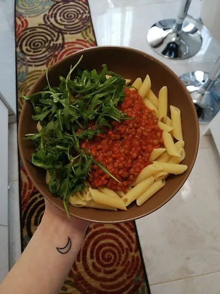

Penne com Lentilhas ao Molho de Tomate
Tempo de preparação
5min
Horas de Cozimento
30min
Tempo Total
35min
Porções
3

Ingredientes
- lentilhas verdes secas q.b
- 1 folha de loureiro
- 1 dente de alho
- sal q.b
- azeite q.b
- 2 copos de polpa de tomate sabor cebola e alho (ou a sua favorita)
- pimenta preta q.b
- massa penne q.b
- queijo ralado (opcional)
Instruções
- No dia anterior coloque as lentilhas de molho para depois ser mais fácil de as confeccionar.
- Num tacho com água quente, adicione as lentilhas demolhadas, lavadas e escorridas; tempere com sal, adicione o dente de alho inteiro e a folha de loureiro.
- Quando cozidas, escorra a água e retire a folha de louro e o dente de alho. Verta as lentilhas sobre o mesmo tacho em que as cozeu e adicione a polpa de tomate e tempere com pimenta preta. Deixe ferver durante 3 a 4 minutos e está pronta a servir com uma massa penne. Opcional, um queijo vegan ralado por cima a derreter não faz mal a ninguém ;)